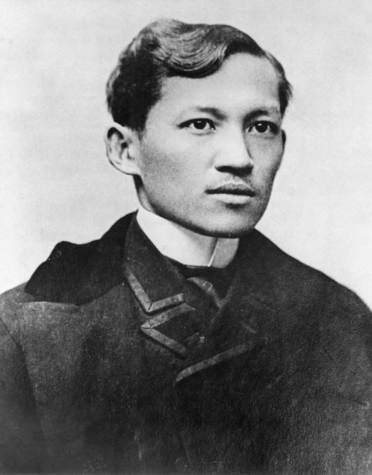
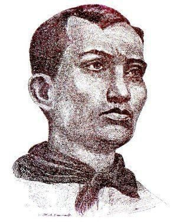

Heroes in the Philippines

José Protacio Rizal Mercado y Alonzo Realonda
Jose Rizal ay isang pangunahing tao sa laban para sa kalayaan ng Pilipinas mula sa pamumuno ng mga Kastila at siya ay binaril ng mga Kastilang awtoridad noong 1896.
Andres Bonifacio
Tagapagtatag ng Katipunan, isang lihim na samahan na lumaban para sa kalayaan ng Pilipinas mula sa kolonisasyong Kastila. Pinangunahan ni Bonifacio ang Rebolusyong Pilipino hanggang sa kanyang kamatayan noong 1897.
Emilio Aguinaldo

Unang Pangulo ng Pilipinas at pinuno ng Rebolusyong Pilipino laban sa pamumuno ng mga Kastila, at kalaunan laban sa pananakop ng mga Amerikano.
Apolinario Mabini

Isang lider revolutionary at estadista na nagsilbing Punong Ministro ng Unang Republika ng Pilipinas. Sa kabila ng pagiging paralisado mula sa bewang pababa, siya ay kilala bilang "Sublime Paralytic" dahil sa kanyang mga kontribusyon sa kalayaan ng Pilipinas.
Marcelo H del Pilar

Isang manunulat, abugado, at mamamahayag na naging kilalang lider ng Kilusang Propaganda, na naghangad ng mga reporma mula sa pamahalaang Kastila. Ang kanyang mga akda ay naging inspirasyon sa mga Pilipino upang ipaglaban ang kanilang mga karapatan.